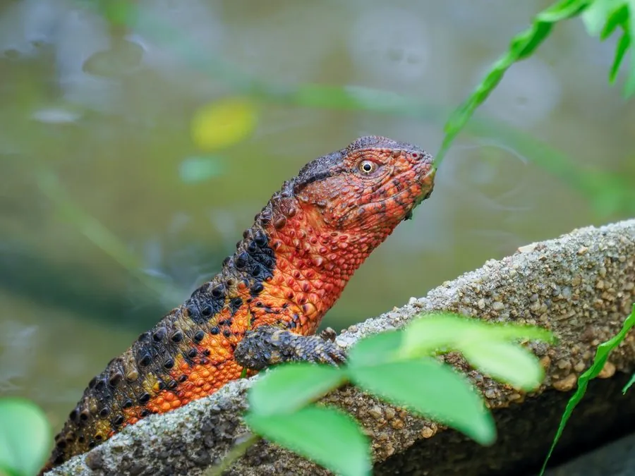

爬行动物 · 动物界
鳄蜥 Shinisaurus crocodilurus

中国特产的古老蜥蜴，外形兼具鳄与蜥蜴的特征，生活在山区溪流边的树枝上，是国家一级保护动物。
- 分类
- 门脊索动物门纲爬行纲目有鳞目科鳄蜥科属鳄蜥属
- 栖息环境
- 山区清凉溪流边的树枝、岩石与灌木丛
- 地理分布
- 中国广西、广东、湖南等地及越南北部的山区溪流
- 保护级别
- IUCN 濒危（EN）；中国国家一级保护动物；CITES 附录 II
物种志
鳄蜥体长 30–40 厘米，其中尾部约占一半，头部扁平，吻部尖，背部有颗粒状鳞片并排列成纵横的棱脊，形似鳄鱼的皮肤，四肢短而有力，趾端有爪，尾巴侧扁，善于在水中和树枝上活动。
它分布于中国广西、广东、湖南等地的山区溪流，也见于越南北部，常在溪边的树枝、岩石上晒太阳，遇到危险便跃入水中躲藏。鳄蜥以昆虫、蚯蚓、小鱼和蝌蚪为食，夜间在枝叶间休息。它是卵胎生蜥蜴，雌蜥在妊娠约 9–10 个月后直接产下 2–7 只幼蜥，幼蜥出生即可独立活动。鳄蜥是古老的孑遗物种，对研究蜥蜴演化和爬行动物生殖方式有重要价值；由于栖息地破坏和非法捕捉，其种群稀少，被列为濒危物种和国家一级保护动物。
形态与习性
- 食性昆虫、蚯蚓、蝌蚪和小鱼
- 体长30–40 cm（含尾）
- 体重约 50–100 g
- 寿命约 10–15 年
- 繁殖卵胎生，妊娠约 9–10 个月，产 2–7 只幼蜥
- 活动节律昼行性，常伏在溪边枝条上
- 保护中国国家一级保护动物
趣味知识
- 鳄蜥的背鳞排列成棱脊，配上侧扁的长尾，外形酷似一条小鳄鱼。
- 它是卵胎生蜥蜴，雌蜥直接产下幼蜥而不是产卵。
- 鳄蜥属孑遗物种，对研究爬行动物演化具有重要价值。